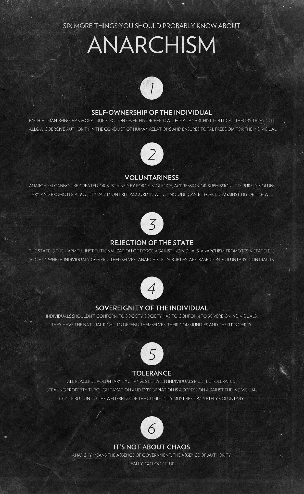

{kind=link}
Knowledge is worthless when it's locked down.
Public speaking is a great way to share knowledge and I love it!
I have had the opportunity to speak at many different conferences and on different topics.
If you'd like me to speak at any event or company, please contact me by e-mail at post@sondreb.com
I love to code and I love to share.
Every line of code I write in my spare time, is shared as open source. I've been building software for more than two decades.
Please show your love and support by becoming an sponsor on GitHub: https://github.com/sponsors/sondreb
{kind=link}
Voluntary should always be the solution.
Society can be organize through voluntary interactions between all humans.
Having the non-aggression-principle as a basis for morality, brings clarity, joy and love to life. Would you considered becoming a voluntaryist?
This is why I started developing Liberstad Norway's first private city, together with my good friend John.
Transhumanism encapsulates the meaning of being and becoming the future self.
Utilizing technology to improve life and health opens up a world of possibilities in the digital age.
It's not enough to passively sit back and wait for technology to improve your life. You need to apply technology in your life on your own, to reap the benefits and reach a better life.
Becoming a better self, is part of the reason why I went vegan back in 2013.
Links
Facebook
,
LinkedIn
,
YouTube
,
Vimeo
,
Flickr
,
Twitter
,
GitHub
UtenStat.no (blog)
,
Liberstad
,
Blockcore
,
Digitale penger
Thanks
For individuals and organizations that give me support, I give you gratitude and thanks!
Organizations
City Chain Foundation, Blockcore.
Top Supporters
Anonymous ($50)
Supporters
Stian, Emil, John.
Please show your love and support by becoming an sponsor on GitHub: https://github.com/sponsors/sondreb
Contact me
Sondre Bjellås
post@sondreb.com
+47 40204040
Feel free to send me e-mails regarding anything. I read everything and I try to respond to all requests.
Credits
Header photo: Daniel
Roe
Anarchy photo: gazed
Stage photo: Harald
Martens Meyer